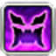

-

Big Fish
Caught all Big Fish from 2.0 through 6.4, full fishing log completion through 6.4
-
Forbidden Blue
Cleared E4S, E8S, E12S with a full synced, Echo silenced Blue Mage party.
-
Ocean Fishing 100%
Full completion of Ocean Fishing log, all achievements, all and titles.
-

High-End Ultimate
-
Crafting All DoH at 90
-
Gathering All DoL at 90
-
Housing LB 1-41, S 10-54
-
Island Sanctuary
Purr lives her life on a very whimsical schedule. She wakes up every day without a fixed schedule, and goes wherever the winds take her, doing whatever happens to catch her interest. This leads to her picking up many different trades and crafts along the way, including combat, all sorts of crafting disciplines, housing decoration, fishing, chocobo racing, blue magic, even Doman mahjong. As talented and intelligent as she is, she can't possibly master every trade she tries her hand at, but the more she broadens her skillset, the better she can live her independent life: free of capitalism, and free of the market board's extortionary prices.